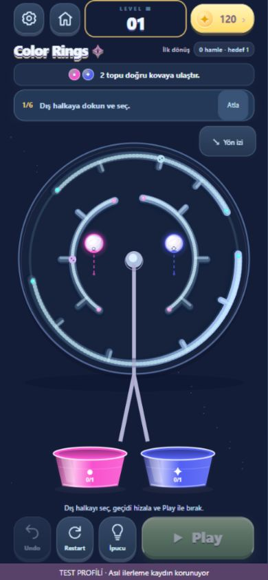
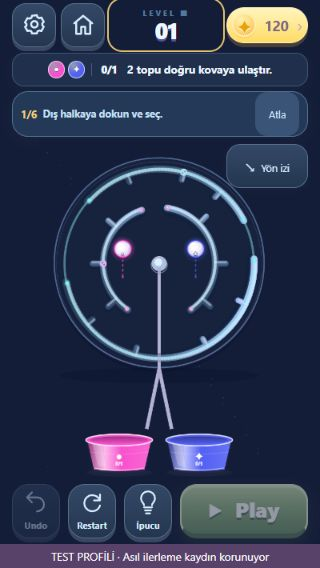
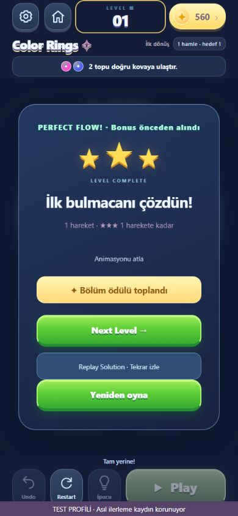
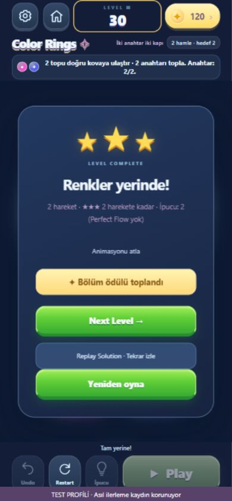
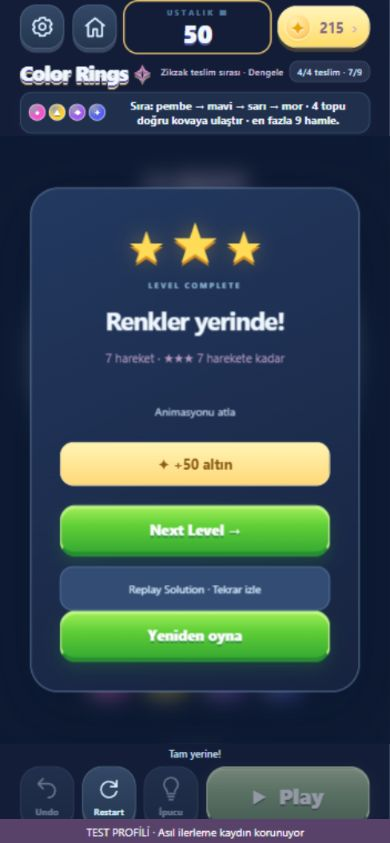

COLOR RINGS · WEB RELEASE CANDIDATEÖğrenmesi açık. Çözmesi bir plan.
Gerçek oyun üzerinden kısa öğretici, belirgin top/kova geri bildirimi ve doğrulanmış çözüm hedefleri. Mevcut 140 bölüm, kayıtlar ve oyun tasarımı korunur.
390×844 · Gerçek seçim, sürükleme, hizalama
320×568 · Kovalar, öğretici ve kontroller ayrı
| Bulmaca | Hamle | Aşama | Karar |
|---|
| K5 | 3 | 1 | Geçitleri hizala |
| K20 | 5 | 2 | İki dalgayı sırala |
| U50 | 7 | 4 | Renk, yön, sıra ve hamle sınırı |
K1 · 1 hareket, gerçek ilk zafer
K5 · 3 hareketK10 · İki teslim dalgasıK20 · 5 hareket, iki ikili dalgaK30 · İki anahtar, hedef 2
U50 · 7 hareket, dört ayrı teslim